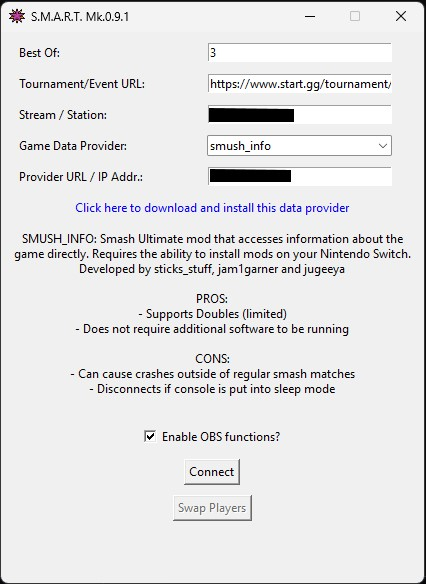

S.M.A.R.T. User Guide
Smash Match Auto Reporter Thing
Requirements
Please make sure you have all of the requirements before subscribing and downloading S.M.A.R.T.:
- You must have a Nintendo Switch with custom (modded) firmware such as Atmosphère. S.M.A.R.T. only works with Smash Ultimate mods.
- You must connect the Nintendo Switch to a wired or wireless network.
- A PC which will receive data from the game.
Quick Start
If any of these instructions don't feel clear, try going through the more in-depth guide on the Installation and Setup and Usage sections.
Getting it Up and Running
- Download S.M.A.R.T. on our Discord server (https://discord.gg/zecMKvF8b5) after subscribing to our Ko-Fi page (https://ko-fi.com/teampolygon)
- Get a start.gg developer token. Learn how to do this here (https://developer.start.gg/docs/authentication/)
- Open config.ini
- On the line that says token=, copy and paste your start.gg token.
- Open smart.exe
Connecting to your Switch
- Choose a data provider, download it and install it on your Switch. Each has their own ups and downs as described when you select them.
- Click on the text that says
Click here to download and install this data providerto get instructions on how to install that mod on your Nintendo Switch - Copy and paste the URL of your tournament on the
Tournament/Event URLfield - Insert the name of your stream on the
Stream/Stationfield - Insert the IP Address of your Switch on the
Provider URL/IP Addr.field if usingsmush_info, insert the IP of your own computer (usually 127.0.0.1) if usingReFramed -
If you are using
ReFramed, you must enable the Statistics plugin and on it enable the Websocket Server - Click on
Connect - If using TournamentStreamHelper, click on the "Track sets from a stream or station" and select your stream there
Assigning Matches
- Make sure your stream is registered on your tournament in start.gg. To do this, go to Stations & Streams on your admin page. This page shows you how to do that (https://help.start.gg/en/articles/1465692-adding-streams-and-creating-stations).
- Open the set that's going to be played on your stream.
- Assign that set to your stream on the set window.
- Once that set ends and the results are all reported, repeat this process until your tournament ends!
Installation and Setup
Installing the App
Installing and setting up S.M.A.R.T. for the first time takes a bit of work but is relatively simple. First you need to get the S.M.A.R.T. app.
As of right now, the app is on private early access through the monthly subscription here (https://ko-fi.com/teampolygon).
No subsequent monthly payments are required to continue using the app. You should only continue paying for the subscription if you'd like to support future updates to this project and to receive dedicated support.
Once subscribed, you will get access to the download link on our Discord server (https://discord.gg/zecMKvF8b5).
The app currently is only tested on Windows, but should also work on Linux and MacOS - if this is your case, you can contact us on the above Discord server before subscribing to help us test on those platforms.
Setting up config.ini
Alongside the app executable you will find a file called "config.ini".
This file contains settings that usually only need to be defined once. Some of them need to be set before using the app in its full capacity.
Here's a description on all of them:

- provider - All fields are optional and are values you can set for when the app opens.
- name: Name of the data provider you want to use every time the app opens. Needs to be a supported data provider. Currently supported values are ReFramed and smush_info.
- url: Default value for URL or IP Address of the console where the data will come from.
- tournament - All fields are optional and are values you can set for when the app opens.
- url: URL of the event where data will be reported to on start.gg by default. For recurring events, you could set a URL here and then quickly change the event number on next weeks/months.
- identifier: Identifier for which setup this instance of S.M.A.R.T. reports to on start.gg by default. Can be a stream name or a station number.
- best_of: Default value for how many games a set should go to in order to determine a winner. This can change dynamically based on the start.gg phase - check Additional Features and Tips for how.
- startgg - All fields are required.
- token: Your start.gg developer token which is tied to your account. Click here to learn how to get a developer token (https://developer.start.gg/docs/authentication/).
- only_get_called_sets: Whether or not S.M.A.R.T. should only look for sets that were marked as "Called" on start.gg at that stream/station before reporting a result. Set value to true to enable this feature, or false to detect any set.
- obs - All fields are required if you are using OBS.
- host: IP Address of the device where OBS is being run. If this device is the same S.M.A.R.T. is being run, use the default value localhost.
- port: Port where OBS is listening for requests. This is 4455 by default.
- password: Password you have set up on OBS-Websockets for external apps to access OBS. Setting up a password is recommended, but if you haven't done so, you can leave this field blank.
- To set up a password for OBS-Websockets, Open OBS, go to the Tools Tab, then click on Websocket Server Settings.
- This is also where you must enable Websocket server for S.M.A.R.T. to access OBS from if you've never done so.
- ingame_scene: Scene to which S.M.A.R.T. should change to when any match starts (whether it's a tournament set or not).
- game_end_scene: Scene to which S.M.A.R.T. should change to when any match ends (whether it's a tournament set or not).
- set_end_scene: Scene to which S.M.A.R.T. should change to when a tournament set ends (after transition to game end scene happens).
- set_end_scene_delay: How many seconds S.M.A.R.T. must wait before changing from game end scene to set end scene.
- enable_replays: Defines if S.M.A.R.T. should use OBS to record key moments in the game to show as a replay later. Set value to true to enable this feature, or false to disable. (This feature is coming out soon).
If you're unsure of the IP Address on your Nintendo Switch, go to Settings on your console and open the "Internet" section.

After going through all the settings on config.ini you should be good to go to open the app.
Installing Data Providers
After downloading the app, you must also get one of the supported data providers. For Smash Bros. Ultimate, these are mods you install on your Nintendo Switch.
Once you open S.M.A.R.T. the app will show you the avaiable ones and how to install them.
Here's some additional information on how to use the data providers with S.M.A.R.T.:
- ReFramed: S.M.A.R.T. receives data through the ReFramed app. Once you've downloaded, installed the app and connected it to your Nintendo Switch, you must enable the Statistics plugin. On the plugin go to the "Settings and Export" tab and make sure the Websocket Server is active. Your provider URL/IP is the IP Address of your machine on the specified port. If you're running multiple instances of S.M.A.R.T. and ReFramed, be sure to specify a different port than the default (1337) then add the port number at the end of the IP Address (example: 127.0.0.1:1336).
- smush_info: No additional setup is required but the console needs to be connected to the same network as the computer S.M.A.R.T. is running on before the game starts. Your provider URL/IP is the IP Address of the Nintendo Switch. You can find out which IP Address your Switch is on by accessing the Internet section on the console settings.
Once that's done, you should be good to go!
Usage
Connecting to the Console
This is how S.M.A.R.T. looks like once you open it:

If you set up your config.ini file prior to this step, all of these fields should be mostly set up. We'll go through them all anyway:
Best Of: How many games a set should go to in order to determine a winner. This can change dynamically based on the start.gg phase - check Additional Features and Tips for how.Tournament/Event URL: URL of the tournament where data will be reported to on start.gg. An example would be: https://www.start.gg/tournament/smash-station-87-1/event/cps-nextgen. The event part of the URL is required if working with stations instead of a stream.Stream/Station: Which setup this instance of S.M.A.R.T. should report to on start.gg. Can be a stream name or a station number.Game Data Provider: Select the data provider you want to use. Once a provider is selected, the app will show you what you can or can not do with it, alongside a link to download and install it.Provider URL/Ip Addr.: URL or IP Address of the console where the data will come from.Enable OBS functions?: Set whether the S.M.A.R.T. app will interact with OBS. OBS settings must be defined onconfig.inibefore enabling.Connect: Connect to the console / data provider.Swap Players: Manually swap the results of the match being played between players.
Once clicking on Connect, the app will connect to the console in order to receive data. The console must be on the same network as the computer where S.M.A.R.T. is being run.
If having both devices on the same network is an issue, we recommend setting up a WiFi Hotspot on the computer to which the console can connect to.
Getting Matches to be Reported
You must indicate to S.M.A.R.T. which matches are to be played on the stream or station before they happen. This page shows you how to do that (https://help.start.gg/en/articles/1465692-adding-streams-and-creating-stations)
You only need to add the number of stations you feel you'll be able to use with S.M.A.R.T. If you're only using it with a stream setup, creating stations is not needed.
Then, once your tournament starts, you must indicate to S.M.A.R.T. which set is to be played on the stream or station before the match starts. Here's how to do it on the bracket page:

You can assign multiple sets for a station or stream and they'll be put in a queue, and S.M.A.R.T. will start reporting results for the first set assigned to that station or stream, automatically reporting results for the next ones as they happen. This can be useful for the Top 8 or Top 4 section of the tournament, where matches are usually called at a specific order.
S.M.A.R.T. will try to detect who's playing on each side through the use of in-game tags.
If at least one of the players is using the same tag in-game as on start.gg, the app will be able to correctly report the results regardless of the side they are playing. Due to this, it's highly recommended to instruct the players at your tournament to use in-game tags that are similar to their start.gg tag when playing on S.M.A.R.T. connected consoles.
If this is not the case and/or for some other reason S.M.A.R.T. is not able to accurately detect the order of players playing in a match, you can fix it using the Swap Players button.
Integrating with TournamentStreamHelper
TournamentStreamHelper is a scoreboard app for tournament livestreams. It has a lot of robust features, while also being free to use and open-source.
You can check out TournamentStreamHelper here (https://github.com/joaorb64/TournamentStreamHelper).
S.M.A.R.T. is able to seamlessly integrate with TournamentStreamHelper in order to keep the scoreboard on your tournament stream automatically updated. No additional set up on S.M.A.R.T. is needed for this.
On TSH, all you need to do is use the "follow stream/station" feature.
First, you must enter the URL for your event on the "Set tournament" button, then click on "Track sets from a stream or station" on the bottom.
If your stream or station is not visible on the list, make sure it was correctly created on your tournament in start.gg. Sometimes streams won't show on the list unless at least one set is assigned to it.
Once that's done, TSH will automatically update the score once a game ends, and also update to show information on the next set once the current one ends.

Dynamic "Best Of" Setting for Event Phases
Usually as tournaments go on, sets in your event will change from Best of 3 to Best of 5 on the finals phase of your event, for example.
In order to remove the need to keep the Best Of setting updated on your event, S.M.A.R.T. is also able to update this value based on which phase the currently assigned set is on.
start.gg doesn't let you configure the "Best Of" setting of a phase or a round for offline events, but we can work around this by setting a "Best Of" abbreviation on the phase name. S.M.A.R.T. will then detect it and update the value accordingly.
Once you create the phase where all sets are supposed to be Best Of 5, for example, just add "BO5" to the name and you should be all set.

Troubleshooting
App says "Timed out" even though the console is turned on and matches are happening.
If this happens, it's either due to the console being put into sleep mode or staying on the HOME menu for too long. This can make the data providers stop working.
Closing the game and opening it again restarts the provider and you should be able to connect to the console again.
The app reported swapped results for a set in the past and I can't use the Swap Players button on that set anymore. Is there a way to quickly fix the results?
If you need to swap results of previous sets, we recommend using StartKit (https://startkit.gg/) where a "Swap Results" button should be available for all completed sets.

Contact
Feel free to reach us on our Discord server (https://discord.gg/zecMKvF8b5) if you have any questions, Dedicated support and feature suggestions are currently only available to monthly supporters.
You can also DM us on X/Twitter (https://x.com/teampolygonbr) or send us an email (teampolygonbrasil@gmail.com)